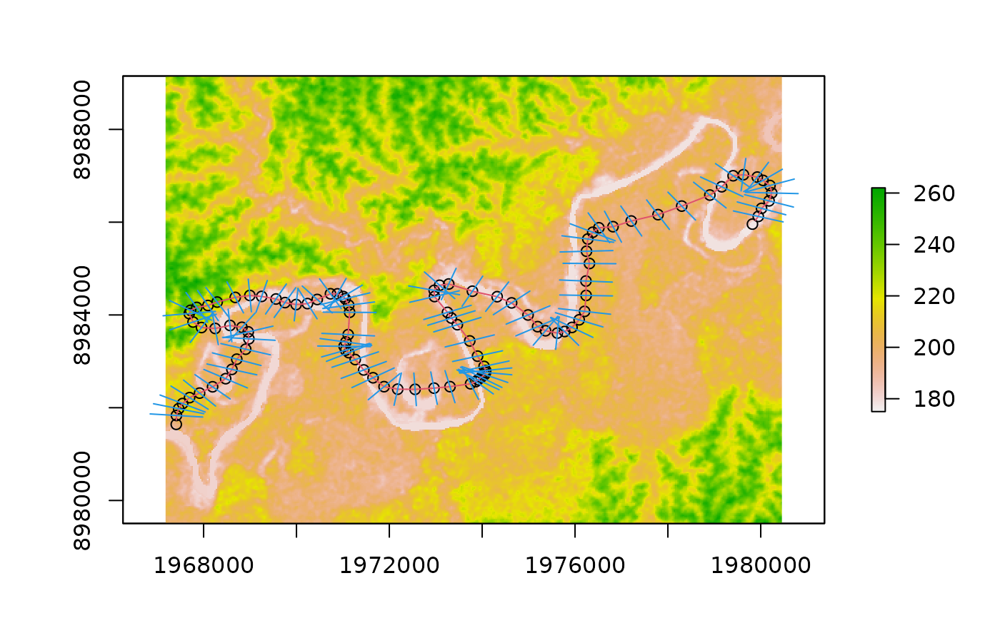

transects.RdCalculates the perpendicular transects to a series of points
transects(points, radius)a sf object with multiple features with POINT geometry
the radius to consider for the transect
a sf object with multiple features with LINESTRING geometry, corresponding to transects
points=st_read(system.file("data/points.shp", package="morphRiver"))
#> Reading layer `points' from data source
#> `/home/lvaudor/R/x86_64-pc-linux-gnu-library/4.3/morphRiver/data/points.shp'
#> using driver `ESRI Shapefile'
#> Simple feature collection with 101 features and 1 field
#> Geometry type: POINT
#> Dimension: XY
#> Bounding box: xmin: 1968189 ymin: 8980512 xmax: 1979458 ymax: 8988157
#> Projected CRS: Mercator_2SP
rasterDEM=raster(system.file("data/rasterDEM.tif", package="morphRiver"))
plot(rasterDEM)
plot(points,
add=TRUE, col=1)
plot(points_to_linestring(points),
add=TRUE, col=2)
plot(transects(points,500),
add=TRUE, col=4)
#> Warning: ignoring all but the first attribute
